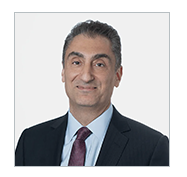

Investment resilience: Nick Chamie explains how a research-driven approach makes IMCO a better investor
Nick Chamie, IMCO's Chief Strategist and Senior Managing Director, Total Portfolio and Capital Markets, recently examined the changing dynamics in the global economy and how institutional investors can improve the resilience of their portfolios. The discussion took place on the Top 1000 Funds Fiduciary Investors podcast.
Nick commented on how taking a research-driven approach to portfolio construction, asset mix and investment strategy makes IMCO a better investor. He explained how factoring research into our decision-making orients the team toward the important trends we should be focusing on and their implications.
IMCO's World View is an example of how we use research to inform decision making. Rising inflation is one of the trends highlighted in the report and Nick described how IMCO is building greater inflation protection in our portfolios through increased exposure in inflation-linked bonds, prioritizing infrastructure assets, and examining equity sectors that correlate well with inflation.
Nick noted, "We're looking at [our portfolio] holistically and looking for natural places where we are already investing, but are elevating the priority in which their inflation attributes could be imported..."
In this market of increased volatility, Nick also explained how IMCO actively manages its portfolio by prioritizing liquidity and ensuring IMCO has the flexibility to pivot and seek out opportunities with the best risk-reward tradeoff.
The complete interview is available here.